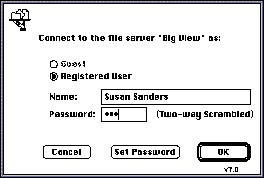

|
PasswordsIn addition to access privileges,
password schemes often protect shared resources such as
collective data. When you provide a password system, make
the interface to it as clear as possible. Follow these
guidelines concerning passwords:
- Allow passwords to contain both alphabetic and
numeric characters.
- Allow passwords to be as long as is practical.
- Never display the password on the screen in clear
text, not even while the user is typing it. A common
method of providing feedback to the user is to display a
bullet character for each character that the user types.
When the user edits a password, the Delete key erases one
character in a system that displays a character for each
character typed.
- Provide a way for the user to verify the password
when it is entered or changed. Requiring the user to
enter the password two times minimizes the possibility of
a typing error. If a person makes a mistake in entering
the password but doesn't have to verify it, he or she
will then be denied access to the data.
Figure 2-9 shows the
initial dialog box a user sees when connecting to an
AppleShare file server. It shows the password field with
bullets in it to represent typed characters.
Figure 2-9 The AppleShare connect dialog box

|